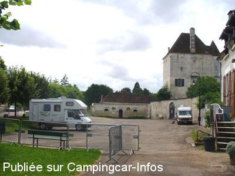
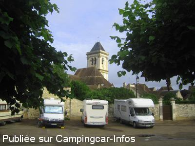

APN = Parking toléré jour/nuit de :
CRAVANT
(N° 415)
Accès/adresse :
Rue des Fossés
89460 CRAVANT
89460 CRAVANT
Latitude : (Nord) 47.68108° Décimaux ou 47° 40′ 51′′
Longitude : (Est) 3.69043° Décimaux ou 3° 41′ 25′′
Tarif : Gratuit
Services :

tous commerces
Autres informations :
Stationnement possible à coté d'un ancien lavoir et du donjon

Le 23/12/2009 par Jackymillon

Le 23/07/2009 par Bernard TARTOIS
de
Céline et Denis
le 11/03/2012 :
aire agréable par son cadre mais nuit épouvantable à cause de petits minables qui font du rodéo sur la place avec leur voiture de 1h a 4h du matin ,dommage.
aire agréable par son cadre mais nuit épouvantable à cause de petits minables qui font du rodéo sur la place avec leur voiture de 1h a 4h du matin ,dommage.
de
Bernard TARTOIS
le 23/07/2009 :
C'est en en revenant d'Italie que nous avons passé la soirée et la nuit au pied du donjon. L'endroit est très calme et agréable avec tous ces arbres et ces massifs de fleurs. A côté du lavoir un robinet offre de l'eau gratuitement. Par contre, les vidanges doivent être faites sur une aire, à la sortie sud du village. Un troisième lieu permet de stationner au bord de l'Yonne mais la nationale très fréquentée est toute proche... §
C'est en en revenant d'Italie que nous avons passé la soirée et la nuit au pied du donjon. L'endroit est très calme et agréable avec tous ces arbres et ces massifs de fleurs. A côté du lavoir un robinet offre de l'eau gratuitement. Par contre, les vidanges doivent être faites sur une aire, à la sortie sud du village. Un troisième lieu permet de stationner au bord de l'Yonne mais la nationale très fréquentée est toute proche... §
de
Jacky MILLON
le 18/11/2006 :
J'en suis a mon troisième arreêt sur cette aire de stationnement. Elle est toujours aussi calme et agréable.
J'en suis a mon troisième arreêt sur cette aire de stationnement. Elle est toujours aussi calme et agréable.